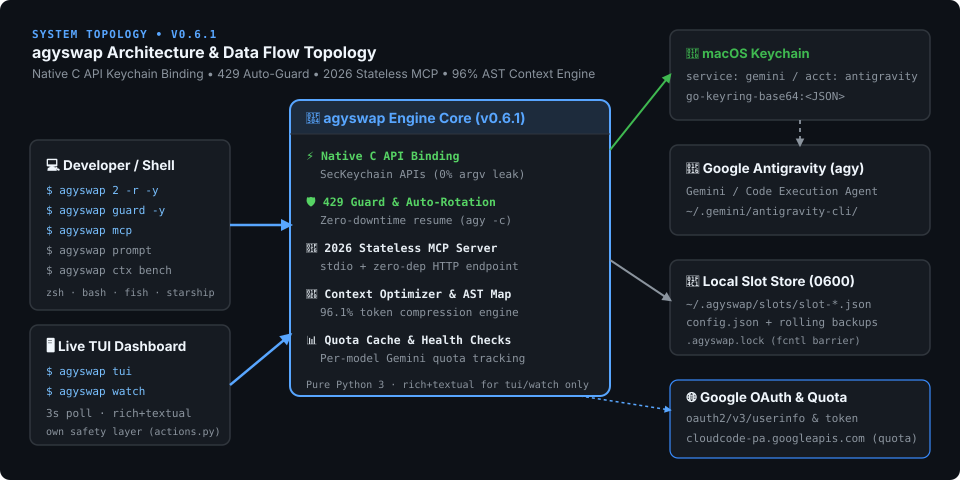

A · Architecture Topology Component Map
Direct interaction between the CLI runtime, macOS Keychain, atomic local storage, and Google endpoints.

B · Slot Inventory (Live Status) 3 Loaded
| Slot | Account / Alias | Status | Token Expiry | Auth Method |
|---|
C · Account Switching Execution Flow
1. Developer runs: agyswap switch work
2. StorageManager loads ~/.agy-swap/config.json under exclusive fcntl.flock
3. Verifies token expiry in ~/.agy-swap/slots/slot-2.json
├─ If EXPIRED and no --force: Halts execution with refresh hint
└─ If VALID or --force: Continues
4. KeychainManager invokes macOS SecKeychainItemModifyAttributesAndData via ctypes
5. Updates active_slot = 2 in config.json and releases file lock
6. Scans running agy processes via lsof and emits session restart notice
D · Security Architecture & Threat Model
| Security Layer | Implementation Mechanism | Threat Mitigated |
|---|---|---|
| Keychain Binding | macOS Security.framework Native C API | Process argument sniffing (ps aux / CWE-214) |
| Storage Isolation | Files 0600, Directories 0700 (opener=secure_opener) | Cross-user access and Umask race conditions |
| Concurrency Lock | fcntl.flock on .agyswap.lock | Lost updates during concurrent terminal operations |
| Template Escaping | safe_json_for_script Unicode character escaping | Stored XSS inside HTML <script> blocks |
E · POSIX Storage Layout
~/.agy-swap/ # Mode 0700 (Owner rwx only)
├── config.json # Mode 0600 (active_slot, accounts metadata)
├── .agyswap.lock # Mode 0600 (flock concurrency barrier)
├── slots/ # Mode 0700 (Directory)
│ ├── slot-1.json # Mode 0600 (Token credentials payload)
│ └── slot-2.json # Mode 0600
└── backup/ # Mode 0700 (Directory)
└── config-YYYYMMDD-HHMMSS.json # Mode 0600 (Rolling automated backups)
F · Troubleshooting FAQ
Do running agy CLI sessions switch instantly? +
macOS caches Keychain reads in memory for short durations. While the Keychain updates immediately in ~0.1s, starting a new terminal prompt or restarting existing agy processes guarantees instant activation.
How do I safely migrate to a new Mac? +
Run agyswap export backup.json on your old machine. On your new Mac, run agyswap import backup.json. Live tokens are excluded from export for security; simply log into each account once via agy and run agyswap sync.
What should I do if a token expires? +
Run agyswap rotate <slot> to attempt a token renewal, or log into the expired account using agy and run agyswap sync.